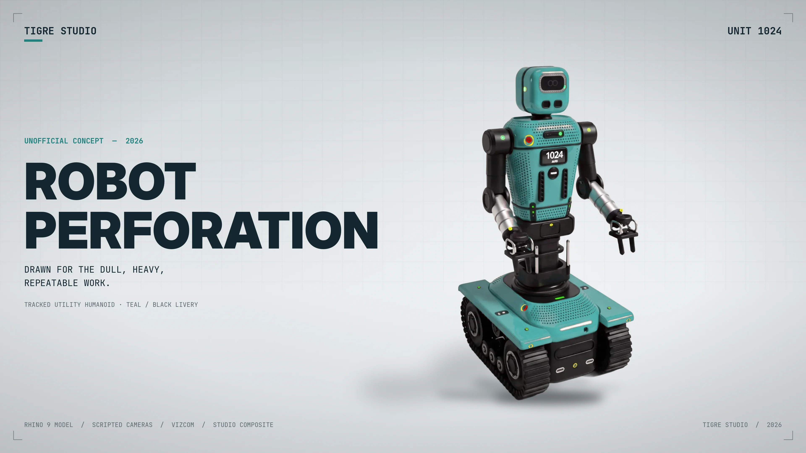
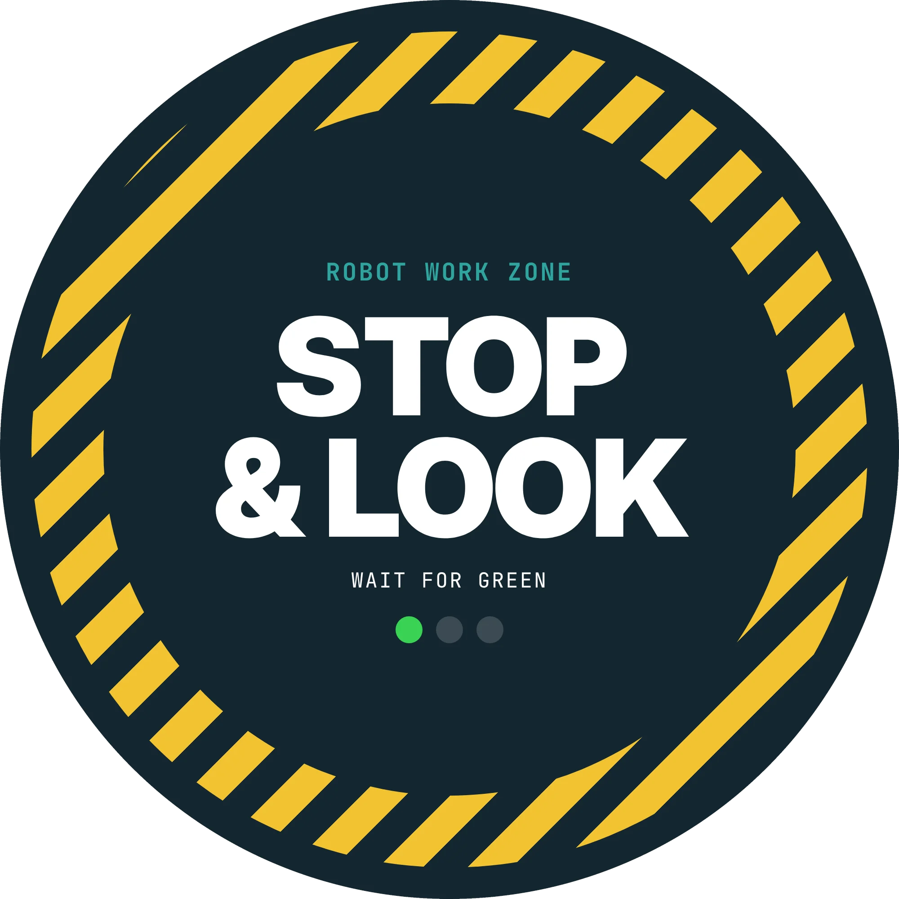
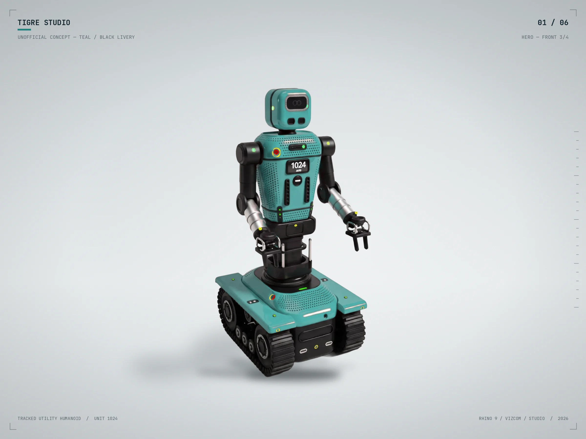
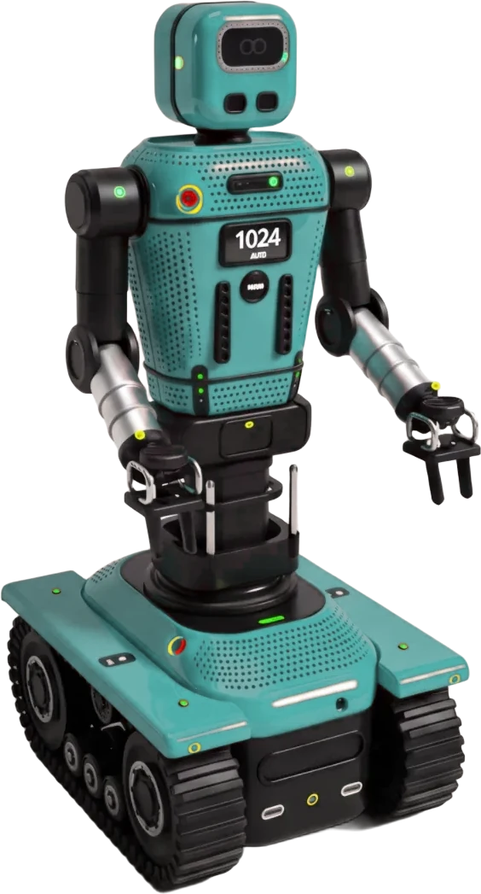
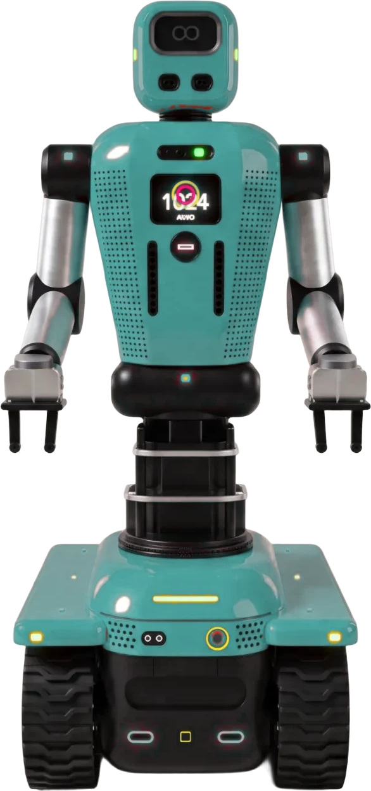
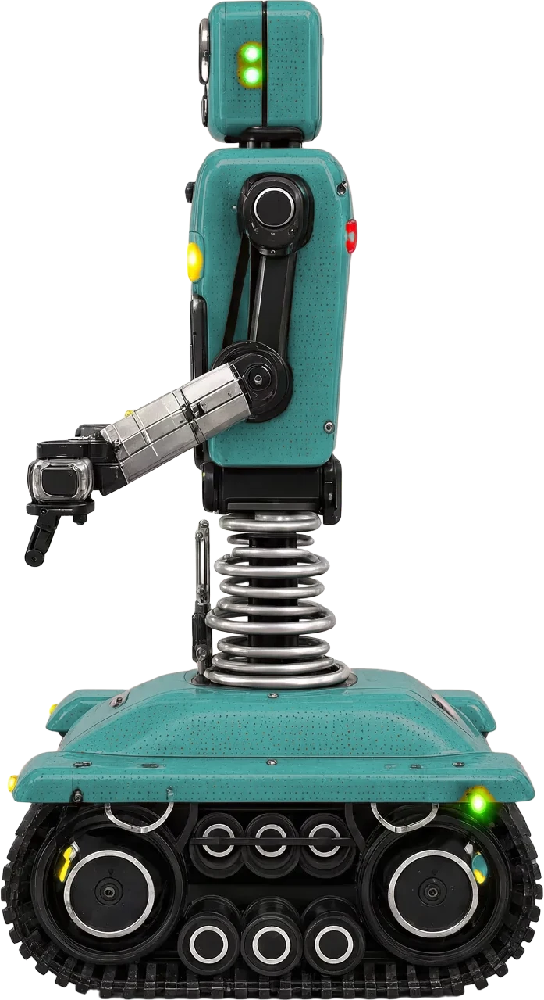
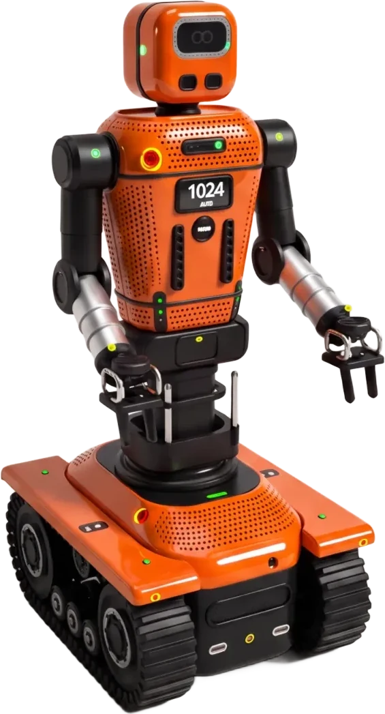
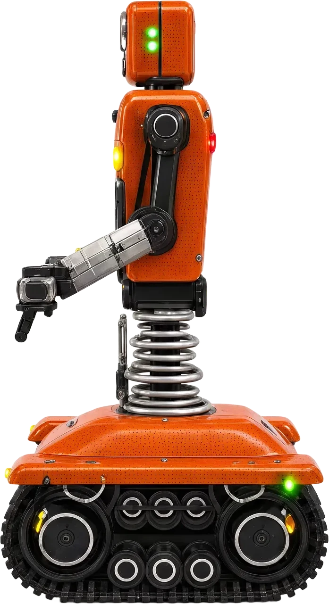
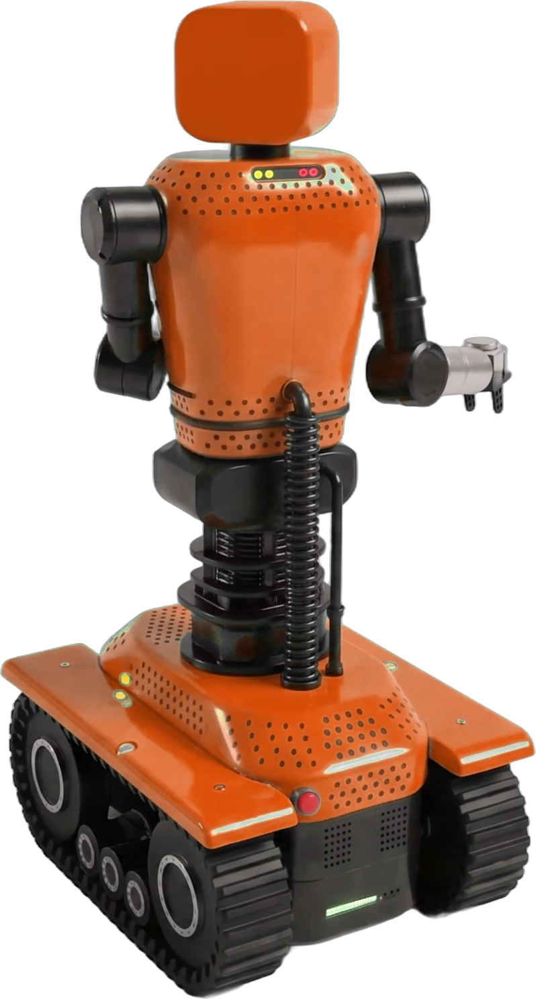
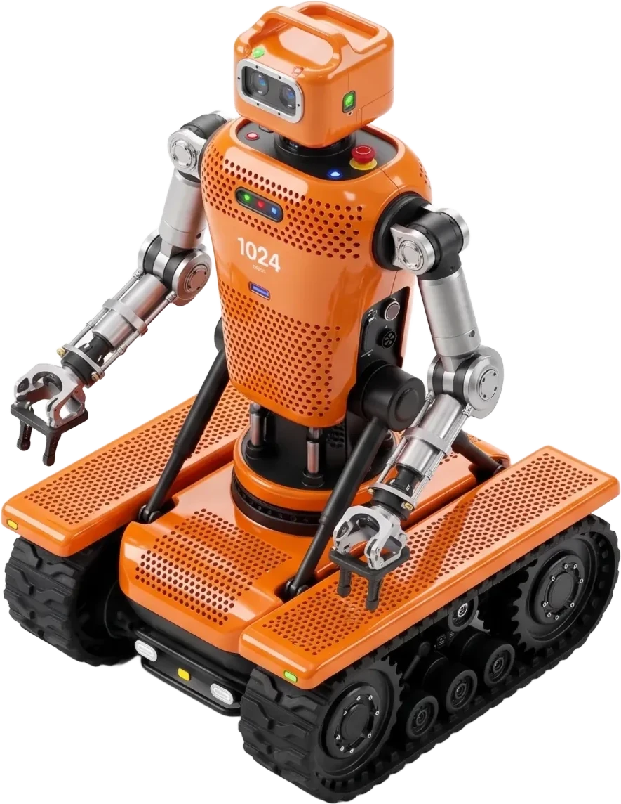

DEPTH, NOT JUST PIXELS
Cameras turn the aisle into points with a distance on each one. Close is warm, far is cool, and a scan line sweeps the floor so you can watch it build the picture.
Head camerasDepthPoint cloud
DRAWN FOR THE DULL, HEAVY, REPEATABLE WORK.
A tracked utility humanoid I modelled in Rhino 9. Six scripted cameras, one material direction in Vizcom, one studio. Then a second job: dress the same robot in a humanoid maker's brand language, a calm teal and black, plain light studios and plain words, and show exactly how I got there, including the renders I threw away.

Unofficial concept · not affiliated with or endorsed by Agility · no logos or proprietary type used
▸ Drag the yellow person toward the robot and watch it slow down, then wait for you.
Cameras turn the aisle into points with a distance on each one. Close is warm, far is cool, and a scan line sweeps the floor so you can watch it build the picture.
Points become racks, totes, a conveyor and, most importantly, a person, tracked as a moving skeleton with a confidence score and a distance on every label.
A green path to the target tote, and two rings on the floor. Someone inside the outer ring and it slows; inside the inner ring and it waits, with its light doing exactly what the floor card says.
Illustrative simulation drawn in code for this concept. Not real robot software, not any company's perception system, and the distances are design intent, not safety specifications.
Agility describes its own language as plain, direct and honest, and calls the team "the truth tellers" in a field full of overpromising.
WHAT I DIDShort declarative lines, no superlatives. The page shows the renders I binned and says plainly where AI helped and where it drifted.
Digit's teal was chosen to feel calm and to stay away from the dark industrial tones of science-fiction robots.
WHAT I DIDRe-liveried the orange shells to a muted teal over matte black. Safety colour stays functional: red e-stops and yellow markers were masked out and never recoloured.
Product shots sit on plain light-grey backgrounds; the brand favours a "wear-and-tear reality" over a polished utopia.
WHAT I DIDMoved the set from a warm sweep to a cool pale-steel studio: one key light, honest contact shadows, no glow, no lens flares.
The brand names four traits: craft and expertise, hard work and durability, levity and candor, responsibility and ethics.
WHAT I DIDCraft: a scripted, repeatable camera rig. Durability: tracks, guards and a sprung column, a robot drawn for repetitive work. Candor: the binned renders are on the page.
Shell teal#2FA39E · my read, not official
Ink#132630 · type + joints
Pale steel#E4E8EA · studio
Paper#F4F5F5 · page
E-stop redSafety · untouched
Marker yellowSafety · untouched
What I left alone, on purpose. No Agility logo or symbol, no Agility Diatype (it's theirs; this page uses Inter Display and JetBrains Mono), no taglines or trademarks, and nothing that copies Digit's form. This is my robot wearing a brand language, which is the part of the job I wanted to show.
Sources: Agility, "Agility Gets a New Brand" (Mar 2026) · Contrary Research on Digit's teal · agilityrobotics.com. Hex values are my own approximations.
A brand for a humanoid has to work on a trade-show wall, on a factory floor, in a sales deck and in a feed, often in the same week. Same robot, same palette, same plain voice, nineteen formats.
| The Brand Designer III brief asks for | Where it is on this page |
|---|---|
| Event and booth graphics | 01 Booth |
| Facility signage and environmental graphics | 02 Signs · floor · lights |
| Video graphics · directing motion | 07 Motion sting |
| Marketing collateral | 03 Explainer |
| Presentations | 04 Slides |
| Social content | 05 Carousel |
| Email and web assets | 08 Web + email |
| Complex robotics concepts made clear for every audience | 03 Explainer09 Anatomy |
| Print and fabrication, vendor quality control | 01 Fab spec02 Sign spec |
| Brand guardian: quality standards and design feedback | 10 Brand review |
| Directing photography | 11 Shot list |
| Brand asset libraries and design systems | 06 Asset library |
| New ideas inside an existing system | Livery passBrand brief |
One headline you can read from the aisle, the robot at true presence, and a footer that tells people when to come back. The wall carries the message; the demo carries the proof.
| Back wall | 120 × 96 in visible · +1 in bleed all sides |
|---|---|
| Material | Dye-sub SEG fabric on an aluminium frame |
| Artwork | Built at 1:4 · 150 ppi at full size · type outlined |
| Colour | Teal proofed against a physical swatch before the run |
| Read test | Headline legible at 30 ft · nothing key below 36 in |

Where the brand meets the people who work next to the robot. Short sentences, one action each. Safety colours do safety jobs only; teal never appears where it could be mistaken for a signal.
| Zone sign | 18 × 24 in · aluminium composite · UV-cured inks |
|---|---|
| Floor decal | 36 in · anti-slip laminated vinyl · rated for forklift traffic |
| Lights card | Station card · one state per row · colour + word + action |
Brand layer only. Real safety signage follows ANSI Z535 / ISO 7010 and the site's EHS team.
Written for an operations lead, not an engineer: five steps from walking the site to steady state, and what changes for the crew. The hard part of robotics, made into one page someone can pin to a wall.
| Format | US Letter · print + PDF |
|---|---|
| Reading order | Headline → five steps → what changes → day one |
Generic rollout steps for a portfolio, not any company's actual process.
A light title slide and a dark content slide from the same system, so a deck can breathe. One idea per slide, the robot as the only image, the loop in four words.
| Format | 16:9 · 1920 × 1080 |
|---|---|
| Pairing | Paper for titles · ink for content |
Hook, proof, point of view. Paper, ink, teal: the three panels use the three main colours in order, so the carousel reads as one piece when it scrolls past.
| Format | 4:5 · 1080 × 1350 × 3 |
|---|---|
| Sequence | Meet it → how it was made → why it matters |
Everything above comes out of one sheet: four brand colours, three safety colours with strict jobs, two typefaces, six robot views, five pictograms and four rules. Hand it to another designer or a vendor and the next piece still looks like this one.
| Rules | One teal accent per layout · safety colours for safety only · robot on pale steel · say what it does |
|---|
An opener for event screens and video: the headline wipes up line by line, the robot turns through four views on the studio floor, a lower-third names it, and an ink end card closes. Built so every piece can be swapped for real footage later.
| Format | 16:9 · 1920 × 1080 · 30 fps · 9 s |
|---|---|
| Beats | Title 0–2 s · turn 1.6–6 s · lower-third 3.2–8 s · end card 8–9 s |
| Motion | Ease-out on entries · no bounces · no glows |
The booth headline, carried to the web without changing a word: one claim, one sentence of proof, one primary action. The email turns the explainer into a send: one thing to download, three short reasons to open it.
| Web | 1440 desktop · 390 mobile · one primary button |
|---|---|
| 600 px · single column · live text, image-light |
Nine callouts, each one a part and why it matters to the person standing next to it. The same drawing works in a sales deck, an investor update and an onboarding binder, because none of it needs an engineer to explain it. This is what I did for sixteen years in technical manuals.
Design intent for my concept robot, not a product specification.
Part of the job is reviewing other teams' work. This is how I'd give that feedback: numbered pins on the piece, one short note per pin that names the rule and the fix, and the corrected version next to it so nobody has to guess.
| Format | Pin · rule · fix · after |
|---|---|
| Tone | About the work, never the person · every note has a fix |
The "before" is a deliberate straw man I made for this review.
The studio set shows the product; this brief gets the truth. Six shots on a working floor: the aisle, the hands on a scuffed tote, the handoff, the stop, end of shift and the crew. Lens and framing for each, and one rule for the grade: keep the scuffs.
| Lenses | 24 · 35 · 50 · 85 mm |
|---|---|
| Light | Available facility light + one soft fill · no gels, no haze |
| People | Real crew, real names, releases signed |


SAFETY ORANGETEAL / BLACK


LIVERY PASS · PYTHON
Asking an image model for "teal" redraws the robot. So the livery is done after the render, on the cutouts: every orange shell pixel is moved to the teal family while keeping its own light and shade, so the perforation, the highlights and the parting lines all survive. The robot's geometry is never touched.
MASK orange hue band · soft edges · blurred 1.2 px PROTECT e-stop reds · marker yellows · black joints · aluminium MAP hue → teal · saturation × 0.56 · value × 0.70 STUDIO pale steel sweep · same shadows · same ground line
| Shell | Muted teal, satin, perforated |
|---|---|
| Joints + base | Matte black |
| Arms | Bead-blasted aluminium |
| Safety | E-stop red · marker yellow, unchanged |
| Status | Green LEDs, unchanged |
STEP 01 · RHINO 9
Real geometry first. Head, torso shell, shoulder and elbow joints, gripper hands, a spring-loaded column, a turret ring and a tracked base with road wheels and guards. Parts are colour-coded on their layers so the render step can read what each part is.
BODY head · torso shell · 2 arms · grippers SPINE turret ring · spring column · guide rods BASE twin tracks · road wheels · track guards CODE layer colour = part family
The shells are smooth in Rhino. The perforation is a material direction given to Vizcom, not modelled holes.
STEP 02 · C# IN RHINO 9
One camera, one target, six directions, a lens for each, the model's bounding box fitted every time, written out at 1920 × 1440 with no grid or axes. If the model changes, all six views can be re-shot in seconds. Repeatable beats pretty.
| Cam | Direction (x, y, z) | Lens |
|---|---|---|
| 01 | −0.55, −1.00, 0.35 | 50 mm |
| 02 | 0.00, −1.00, 0.08 | 60 mm |
| 03 | 1.00, 0.00, 0.08 | 60 mm |
| 04 | 0.60, 1.00, 0.35 | 50 mm |
| 05 | 0.45, −1.00, −0.05 | 35 mm |
| 06 | −0.70, −0.80, 1.10 | 50 mm |
TARGET (0, 0, 78) · camera at target + dir × 450 FIT ZoomBoundingBox on the model OUT ViewCapture 1920 × 1440 · grid + axes off

 RHINOVIZCOM
RHINOVIZCOMSTEP 03 · VIZCOM
Each capture goes into Vizcom with one written material direction: a perforated polymer shell, black anodised joints, bead-blasted aluminium arms, rubber tracks. Four outputs per view; I keep the one that stays truest to the model. The first pass was rendered in my studio's safety orange.
MODE Modify · Pro · 4 outputs SHELL polymer · CNC perforation · satin JOINTS matte black anodised ARMS bead-blasted aluminium tubes BASE rubber tracks with tread · green status LEDs STUDIO seamless sweep · soft key · rim light · 85 mm
STEP 04 · ART DIRECTION
Six good renders still aren't a set: every view came back on a different backdrop. Pushing Vizcom harder to match made it worse. On the side and high views it started turning the camera and redrawing the head and torso. A render that quietly changes the design is worse than a white background, so those went in the bin.
PASSES 3 rounds · 4 outputs each KEPT outputs that hold the model's pose and parts BINNED re-angled side views · copied poses · redrawn heads






STEP 05 · CUT + COMPOSITE
Vizcom cuts each robot off its backdrop. Each one is rebuilt into the same studio: one sweep, one key light from the upper right, one floor line. Shadows come from the robot's own silhouette, a long soft one back-left and a tight one where the tracks meet the floor. Same scale, same ground line, every view.
CUT Vizcom Remove background · edge defringe BACKDROP pale steel #CED4D7 → #E6EAEC · sweep floor · key pool SHADOW own silhouette → skew + squash + blur (long + contact) FINISH fine grain · same scale · same ground line
STEP 07 · LAYOUT
Six numbered frames, a six-view turnaround on one floor line, and a 16:9 cover, in both liveries. The teal set uses dark ink type with one teal accent, crop ticks and a faint grid: enough system to look engineered, quiet enough to stay out of the robot's way.
COVER 3840 × 2160 · title block + hero TURNAROUND 3840 × 2160 · 6 views · one floor datum FRAMES 6 × 2400 × 1800 · numbered 01–06 TYPE Inter Display · JetBrains Mono caps · ink + teal
Original livery: safety-orange cover · safety-orange turnaround
Me: the robot model in Rhino 9, the camera set, the material direction, the brand read and every keep-or-bin call · Tools: Rhino 9 (C# view capture), Vizcom, Python livery pass and browser compositing with Claude